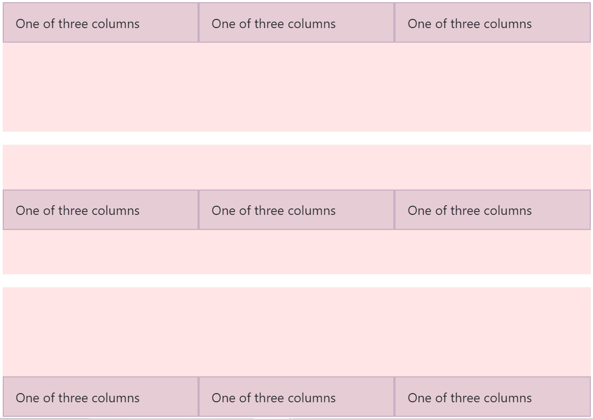

Container:
Crea marganeres a la derecha y a la izquierda.
div class="container">
!-- aquí se pone el contenido-->
/div>
Container-fluid:
Ocupa la totalidad de la pantalla.
div class="container-fluid">
!-- aquí se pone el contenido-->
/div>
El sistema grid esta basado en dividir la pantalla en 12 columnas, estas se pueden juntar a su vez para dividirla en otro numero de columnas mucho mas pequeño pero haciendo el tamaño de estas mucho mayor como 4 o 3 tomando en cuenta que se deben dividir en numeros enteros.Por ejemplo en 6, 4, 3, 2
Para poder empezar a trabajar con el sistema grid se deben generar primero filas con la clase row
div class="container">
div class="row">
div class="col-sm">
One of three columns
/div>
div class="col-sm">
One of three columns
/div>
div class="col-sm">
One of three columns
/div>
/div>
/div>
Si se desea separar las 12 columnas de una forma en la que sea por ejemplo 2 columnas de 4.5 y una columna de 3, se debera crear un row primero que dbivida las columnas una de 9 y una de 3 para luego generar un nuevo row que este a su vez se divira en 2 partes de 6 columnas cada una.
Existen 4 clases adicionales de col-# las cuales nos permitiran crear desarrollos responsives estos son:
- .col-sm para pantallas mayores a 576px
- .col-md para pantallas mayores a 786px
- .col-lg para pantallas mayores a 992px
- .col-lx para pantallas mayores a 1200px
Existen dos tipos de alinamientos, estos son
Alineamiento Vertical:
Nos permite alinear nuestros parrafos o imagenes a la parte superior, en el medio o en la parte inferior de nuestro contenedor.
- align-items-start para ubicarnos en la parte superior
- align-items-center para ubicarnos en la parte central
- align-items-end para ubicarnos en la parte inferior
Nota:Si solo deseamos alinear una sola de las columnas debemos cambiar el alig-items por align-self
div class="container">
div class="row align-items-start">
div class="col">
One of three columns
/div>
div class="col">
One of three columns
/div>
div class="col">
One of three columns
/div>
/div>
div class="row align-items-center">
div class="col">
One of three columns
/div>
div class="col">
One of three columns
/div>
div class="col">
One of three columns
/div>
/div>
div class="row align-items-end">
div class="col">
One of three columns
/div>
div class="col">
One of three columns
/div>
div class="col">
One of three columns
/div>
/div>
/div>

Alineamiento horizontal:
Nos permite alinear nuestros parrafos o imagenes a la parte izquierda, en el medio o en la parte derecha de nuestro contenedor.
- justify-content-start para ubicarnos en la parte superior
- justify-content-center para ubicarnos en la parte central
- justify-content-end para ubicarnos en la parte inferior
- justify-content-between para ubicar los elementos separados a la misma distancia del centro
- justify-content-around para ubicarlos elementos a una misma distancia de los margenes y de otros elementos
Bootstrap cuenta con unas tipografias especiales las cuales son llamadas Display estas van desde display 1 hasta display 4, siendo display 1 la mas grande y display 4 la mas pequeña, para esta creamos una class display-#.
h1. Bootstrap heading
h2. Bootstrap heading
h3. Bootstrap heading
h4. Bootstrap heading
h5. Bootstrap heading
h6. Bootstrap heading
p class="h1">h1. Bootstrap heading /p>
p class="h2">h2. Bootstrap heading /p>
p class="h3">h3. Bootstrap heading /p>
p class="h4">h4. Bootstrap heading /p>
p class="h5">h5. Bootstrap heading /p>
p class="h6">h6. Bootstrap heading /p>
Bootstrap cuenta con unas notaciones especificas que nos permiten poner margenes o paddings poniendo solo la clase m-# o la clase p-# cambiando el signo numeral por 1 hasta el 5 dependiendo del tamaño que se desea agregar.
adicional se le pueden agregar una letra seguida de la m o la p para especificar un solo lado o superior e inferior y derecha e izquierda.
- t arriba
- b abajo
- l izquierda
- r derecha
- x para el lado derecho y el izquierdo
- y para el lado superior e inferior